Solve real problems, make life easier.
I sit with people where the work happens, then design products that fit how they already live and work.
- Watch what people do, not just what they say.
- Design for intuition, not re-education.
- Start where people already are.
How I work
Start where the work actually happens.
I shadow users in their real environments, whether that’s in a shop, a savings group, or on the job, before I draw a single screen.
Make the invisible visible.
Translating complex user behaviors and hidden friction into clear visual stories shows a team the real problem, so decisions rest on evidence.
Design with the people who use it.
I bring users into the process early, testing rough prototypes in their own language to make sure the solution actually fits their reality before engineering begins.
Fit the system, not just the screen.
Great products don’t exist in a vacuum; I design for the entire ecosystem, accounting for the external stakeholders, offline workflows, and operational hand-offs that make the experience actually work.
- Drag from the hub, or tap the squares next to the rider.
- Collect from the seller first, then reach the shop.
- Each block is 1 minute. A jam is 3.
Sellers we interviewed confirm orders on WhatsApp while on the move. Read the Sendy Supply case study
Selected work
Selected case studies across fintech, logistics and FMCG.
Improving the Sendy Supply seller experience
Taking the manual work out of confirming orders and updating prices for FMCG sellers across East & West Africa.
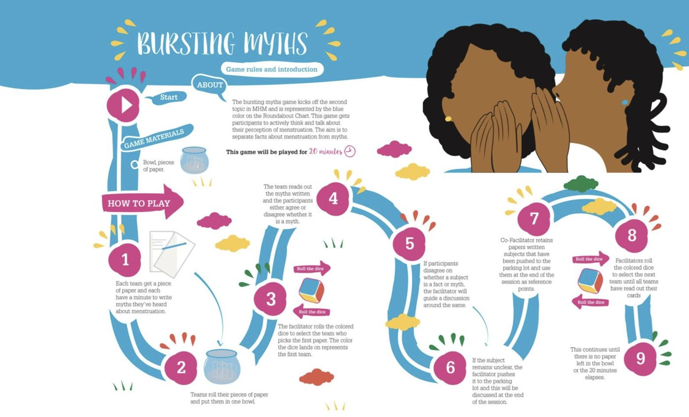
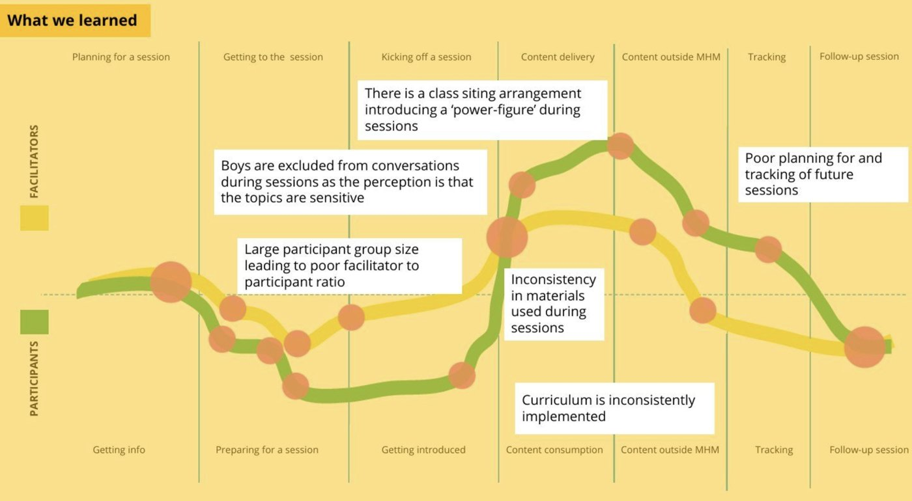
Rethinking how girls are taught menstrual hygiene
Game-based tools that made menstrual hygiene sessions inclusive, structured and fun.
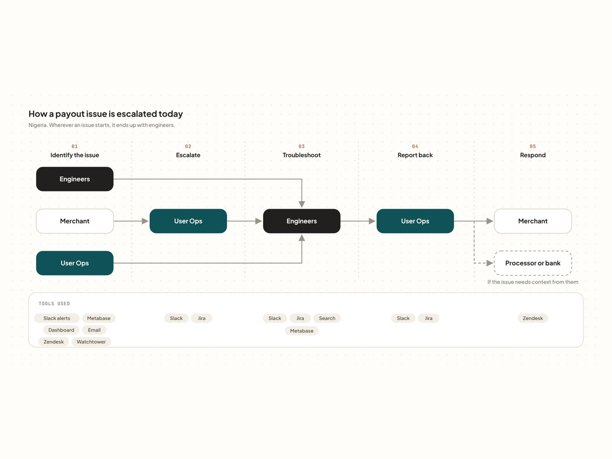
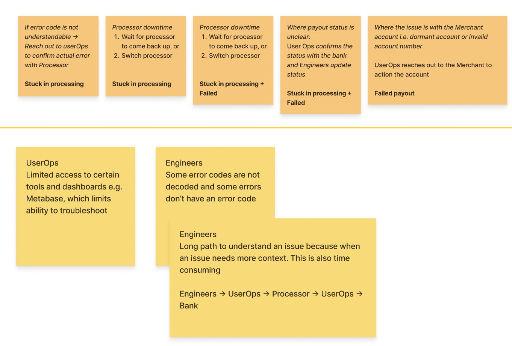
Improving the internal team’s experience of handling settlement issues at Paystack
Giving Paystack’s User Ops team the visibility and actions to fix payout issues without waiting on engineers.
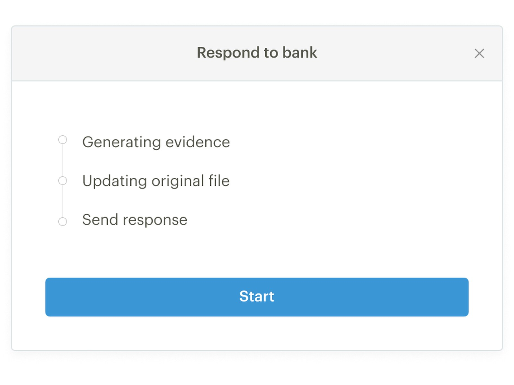
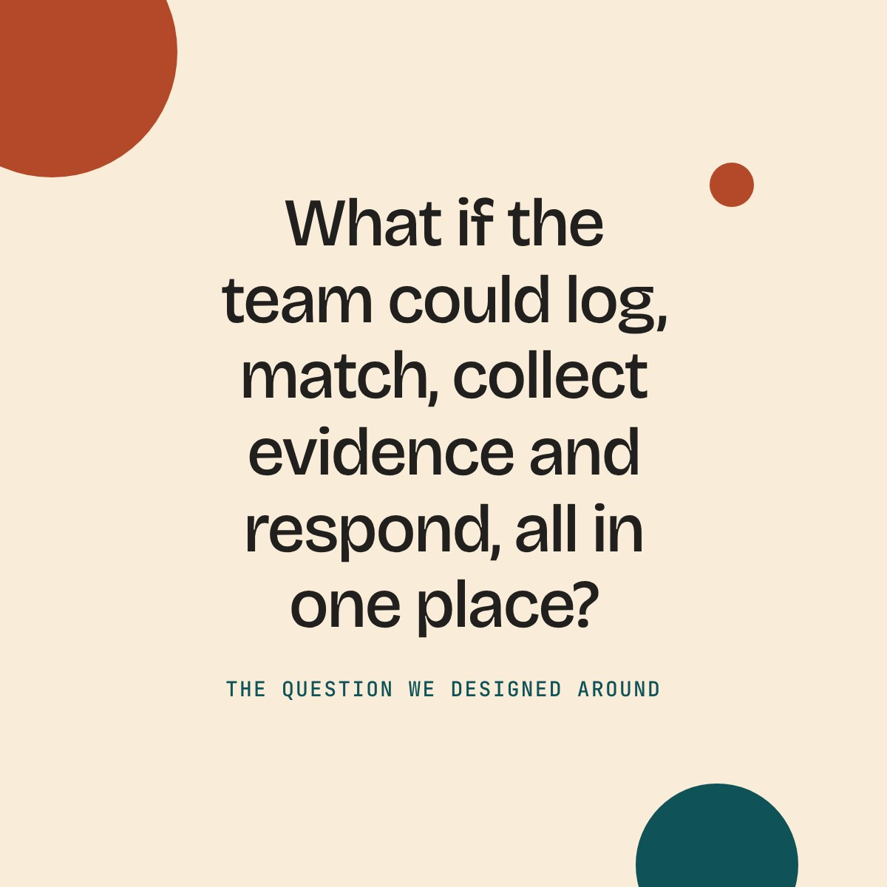
Building DART: one tool to resolve chargebacks in bulk, without the risk of costly errors
Mapping the disputes journey to design one tool that logs, matches and answers chargebacks in bulk.
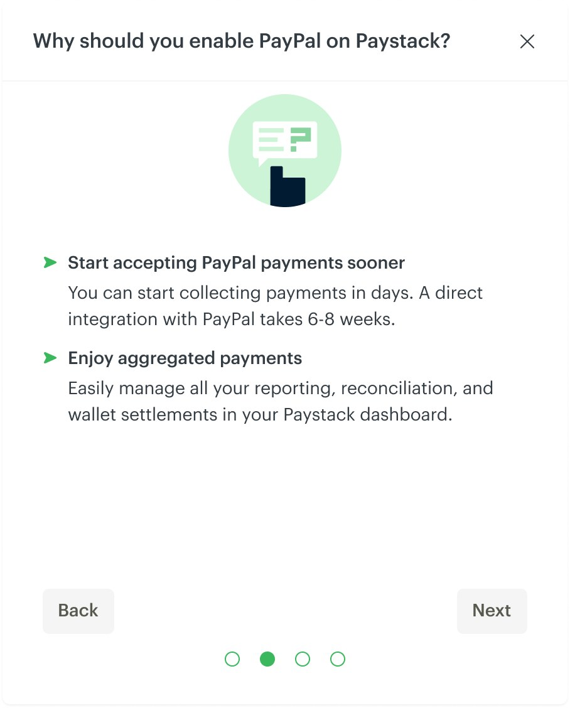
Bringing PayPal to Paystack checkout
Merchant onboarding, customer checkout and PayPal chargebacks, designed and tested with merchants.
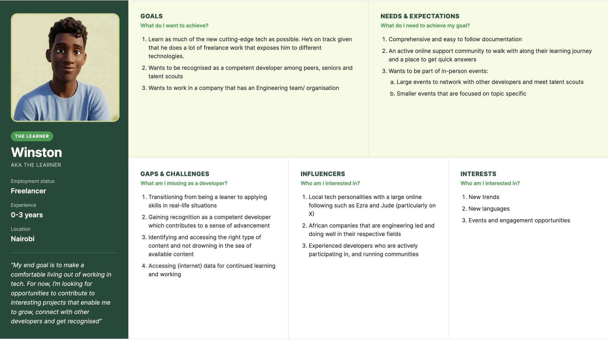
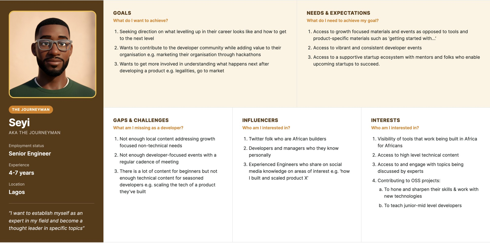
Shaping the Paystack Developer Experience: Persona creation
Interviews and a developer survey that became the personas behind Paystack’s developer experience strategy.
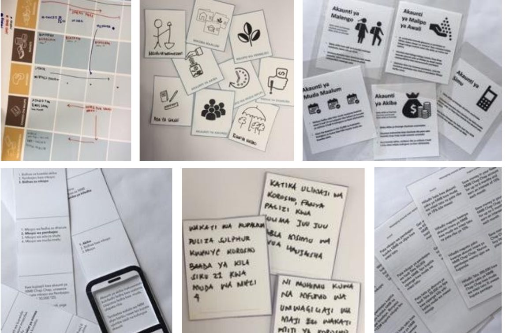
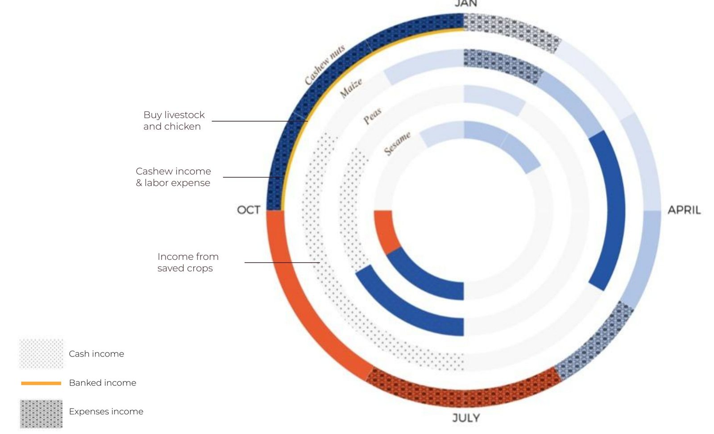
A digital finance roadmap for small agribusinesses
A farmer outreach strategy to grow digital banking along the cashew value chain.
Pro bono work
Design and research for good causes
I love supporting great causes and early ideas. Each year, I dedicate time to a few pro bono projects for nonprofits, community groups and passionate founders. If your team needs a researcher's ear or a designer's eye, let's talk.
- User researchInterviews, field visits and synthesis to understand who you serve
- Usability testingQuick, scrappy tests of a prototype or live product
- Product design reviewsA fresh look at key flows, with practical next steps